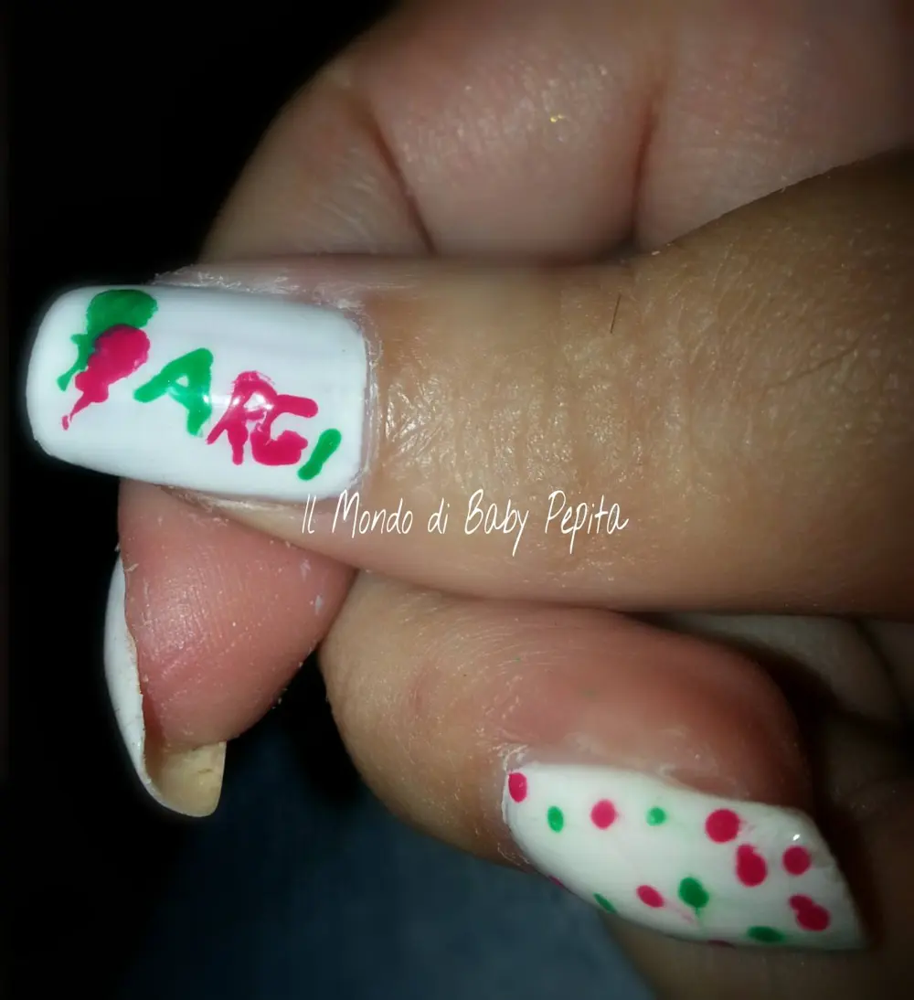
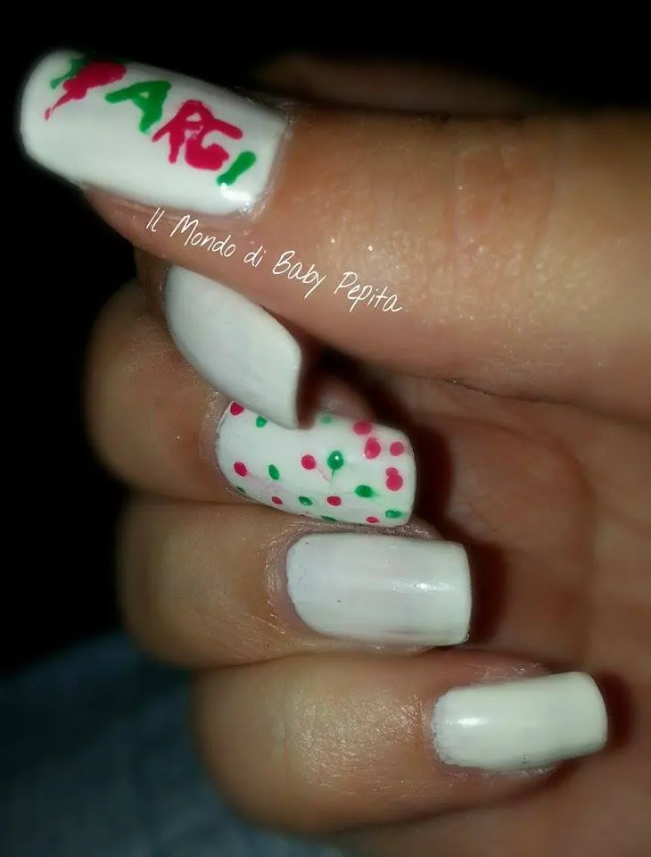

Proposta nail art settembre
Buongiorno amiciiiii
Questa mattina sono proprio assonnatissima e tornerei volentieri a nanna ma ormai ihihih
Da quanto tempo è che non posto una mia proposta di nail art? Qualche mese sicuramente. .Ed oggi eccomi qui. .
Tutto firmato kiko . .
- bianco French n• 204
- Rosa corallo scuro n• 283
- Verde foresta n• 534
- E un lucido Trasparente per sigillare.
La nail art l'ho fatta ieri ma in realtà ero di corsa e non ho potuto postarla. .
Questa volta è a tema. .
Il tema sicuramente sarà tutto nuovo e conosciuto solo per me in quanto rappresenta (non in modo eccellente) il logo del mio negozio. . Il negozio di famiglia. .
(Anche il logo in sé realizzato all'epoca da me).

Rappresenta ciò che in fondo noi mettiamo passione e quindi i palloncini. .
balloon art
è anche una cartoleria, bomboniere e articoli per feste. .Descritto un pò di cosa tratta, vi mostro la mia nail art. .

Ho voluto ricreare i palloncini e il nome in modo semplice così da riuscire a farlo leggere senza problemiSull'anulare ho fatto dei semplici puntini dello stesso colore dei palloncini .